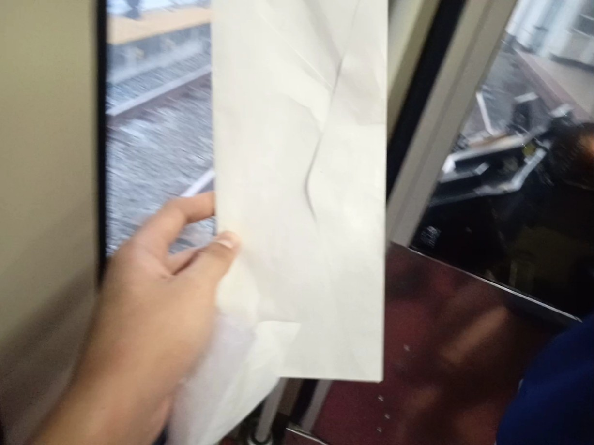
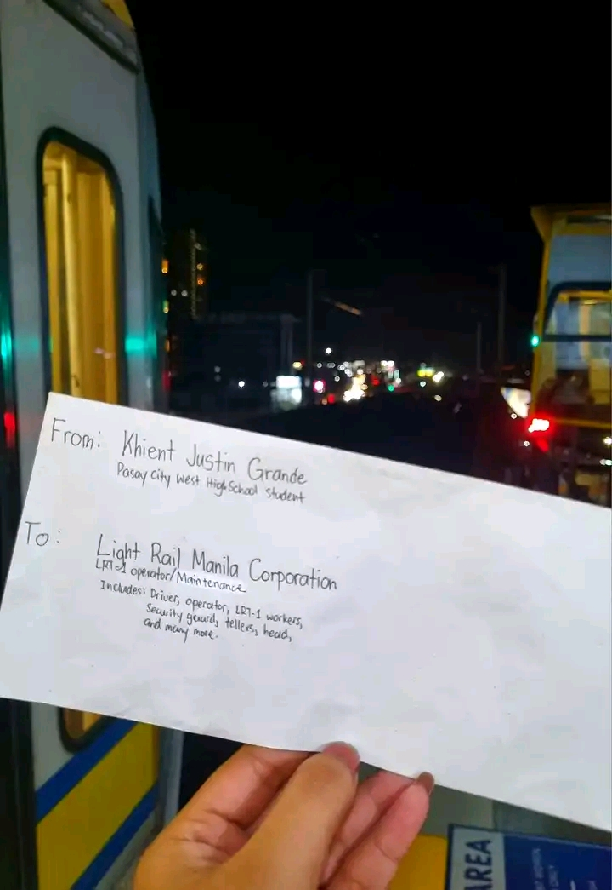

My Official Correspondence with LRT-1 Management
I sent a letter to Light Rail Manila Corporation for serving passengers as great service of LRT-1 and received something incredibly interesting in return!
Creation of letter
Before the letter was created, I regularly rode the LRT-1 and he realized that the LRT-1 and realized that it constantly goves me better service because of fast train speed, cold air conditioning system, enjoyable view outside and also cheap fare.I wrote the letter on February 12, 2023, in preparation for my plan to ride LRT-1 from Libertad to Baclaran on next day.
The plan and journey
On February 13, 2023, it was time to execute my plan to leave the letter at the back of train at the last train car. I rode the LRT-1 train from Libertad, holding the letter while taking a video during my ride.Instead of EDSA station as his destination, I decided to go Baclaran station to leave the letter in the train without knowing people inside the train. I already know that EDSA and Baclaran segment is too short, I can able to walk way back to my home.
Before approaching the train where I currently borading, unfortunately, the train switched the track to northbound side causing the passengers in northbound side are onborading the train and possibility to see the letter. But I didn't give up, I proceeded with placing the letter carefully as last resort.
Leaving the letter

The train arrives at Baclaran station and the doors opened ready to disembark southbound passengers and onboarding northbound passengers. But I stay in the train for a bit longer to leave the letter carefully as possible the train driver is able to notice my letter. After the letter was placed, I left the train, lining up in long queues, leave the station, and walked away toward my home near EDSA.
Social media viral

Hours after the letter was placed, the female driver found the letter that I wrote as she is at Fernando Poe Jr. station of evening and she post it on Facebook to raise my good faith. It rapidly go viral until I finally saw the post.
Many people such the rail enthusiast had seen the post of a train driver and some people shared the post that shows a good message as a commuter.
Reaching to LRMC
The letter was received by Light Rail Manila Corporation (LRMC) which the rail operator are so happy about the letter because it was a first time receiving this in the LRT-1 history.On March 21, 2023, the Light Rail Manila Corporation sent me a message through Facebook Messenger that they already received the letter. LRMC told me to give some contact information to meet one of the team of LRMC.
Meeting with LRMC team
The LRMC is ready to meet me at EDSA station at March 24, 2023 at 7:20 PM (since I gave the information of place and time). I was able to tell the secret how the letter was made and the team of LRMC said that the letter was received on February 13, 2023 by a female train driver. It was a day before the Valentine's day.And the team tell me that they already know that I always doing trainspotting and already listened to my LRT-1 song! So they asked me to sing the song about LRT-1, and I sang it from start to finish. The sang the song
Light Rail Transit Line 1aloud in EDSA station.
After the meet ends, LRMC provided merchandises for Justin as his having good work for LRT-1.
Merchandises received
After our meeting, LRMC provided merchandise to me as a token of appreciation for my support of the LRT-1.- White shirt with LRT-1 trains of 1st, 2nd, 3rd, and 4th gens
- LRT1 ikot MNL name tag
- LRT1 ikot MNL reusable bag
- 4th gen train USB drive with 31.4 GB capacity
- Letter from LRMC
View images of merchandises from LRMC
Aftermath
After the meetup with LRMC and with merchandises received, the Pasay City West High School honored me as the first student in the school to receive this kind of sponsorship. As of today, this remarkable milestone remains unforgettable, and I continue to ride the LRT-1 between Libertad and EDSA stations frequently.
This is a good example of good message from a frequent passenger of LRT-1.
View the letter that I wrote
View the letter that I wrote